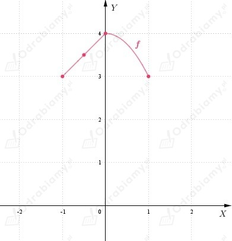

Z treści zadania wiemy, że
a)
Funkcja f jest ciągła w przedziale ⟨-4, -3〉.
Korzystając z wykresu funkcji f możemy odczytać, że w przedziale ⟨-4, -3〉
funkcja f ma wartość największą równą 4 (f(-4)=4), natomiast wartość
najmniejszą równą 1 (f(-3)=1).
b)
Funkcja f jest ciągła w przedziale ⟨-3, 3〉.
Korzystając z wykresu funkcji f możemy odczytać, że w przedziale ⟨-3, 3〉
funkcja f ma wartość największą równą 4 (f(0)=4), natomiast wartość
najmniejszą równą 0 (f(-2)=1 oraz f(2)=0).
c)
Funkcja f jest ciągła w przedziale ⟨-1, 5〉.
Korzystając z wykresu funkcji f możemy odczytać, że w przedziale ⟨1, 5〉
funkcja f ma wartość największą równą 9 (f(5)=9), natomiast wartość
najmniejszą równą 0 (f(2)=0).
| Jeśli funkcja f: ⟨a, b〉 → R jest ciągła oraz:
to istnieje przynajmniej jeden argument c ∈ (a, b) taki, że f(c)=0. |
a)
Wielomian w jest funkcją ciągłą w przedziale ⟨-1, 0〉 oraz zauważamy, że:
Zatem na podstawie twierdzenia o przyjmowaniu wartości pośrednich
wnioskujemy, że wielomian w ma pierwiastek w przedziale (-1, 0).
Zatem równanie ma rozwiązanie w przedziale (-1, 0), co należało uzasadnić.
b)
Wielomian w jest funkcją ciągłą w przedziale ⟨-1, 0〉 oraz zauważamy, że:
Zatem na podstawie twierdzenia o przyjmowaniu wartości pośrednich
wnioskujemy, że wielomian w ma pierwiastek w przedziale (-1, 0).
Zatem równanie ma rozwiązanie w przedziale (-1, 0), co należało uzasadnić.
c)
Wielomian w jest funkcją ciągłą w przedziale ⟨-1, 0〉 oraz zauważamy, że:
Zatem na podstawie twierdzenia o przyjmowaniu wartości pośrednich
wnioskujemy, że wielomian w ma pierwiastek w przedziale (-1, 0).
Zatem równanie ma rozwiązanie w przedziale (-1, 0), co należało uzasadnić.
| Jeśli funkcja f: ⟨a, b〉 → R jest ciągła oraz:
to istnieje przynajmniej jeden argument c ∈ (a, b) taki, że f(c)=0. |
a)
Funkcja f jest ciągła w przedziale ⟨0, 1〉 oraz zauważamy, że:
Zatem na podstawie twierdzenia o przyjmowaniu wartości pośrednich
wnioskujemy, że funkcja f ma miejsce zerowe w przedziale (0, 1).
Zatem równanie ma przynajmniej jedno rozwiązanie, co należało uzasadnić.
b)
Funkcja f jest ciągła w przedziale ⟨-1, 0〉 oraz zauważamy, że:
Zatem na podstawie twierdzenia o przyjmowaniu wartości pośrednich
wnioskujemy, że funkcja f ma miejsce zerowe w przedziale (-1, 0).
Zatem równanie ma przynajmniej jedno rozwiązanie, co należało uzasadnić.
c)
Funkcja f jest ciągła w przedziale ⟨1, 2〉 oraz zauważamy, że:
Zatem na podstawie twierdzenia o przyjmowaniu wartości pośrednich
wnioskujemy, że funkcja f ma miejsce zerowe w przedziale (1, 2).
Zatem równanie ma przynajmniej jedno rozwiązanie, co należało uzasadnić.
| Jeśli funkcja f: ⟨a, b〉 → R jest ciągła oraz:
to istnieje przynajmniej jeden argument c ∈ (a, b) taki, że f(c)=0. |
a)
Funkcja f jest ciągła w przedziale ⟨0, 1/2〉 oraz zauważamy, że:
Zatem na podstawie twierdzenia o przyjmowaniu wartości pośrednich
wnioskujemy, że funkcja f ma miejsce zerowe w przedziale (0, 1/2).
Zatem równanie ma rozwiązanie w przedziale (0, 1/2).
b)
Funkcja f jest ciągła w przedziale ⟨1/2, 1〉 oraz zauważamy, że:
Zatem na podstawie twierdzenia o przyjmowaniu wartości pośrednich
wnioskujemy, że funkcja f ma miejsce zerowe w przedziale (1/2, 1).
Zatem równanie ma rozwiązanie w przedziale (1/2, 1).
c)
Funkcja f jest ciągła w przedziale ⟨1, 3/2〉 oraz zauważamy, że:
Zatem na podstawie twierdzenia o przyjmowaniu wartości pośrednich
wnioskujemy, że funkcja f ma miejsce zerowe w przedziale (1, 3/2).
Zatem równanie ma rozwiązanie w przedziale (1, 3/2).
| Jeśli funkcja f: ⟨a, b〉 → R jest ciągła oraz:
to istnieje przynajmniej jeden argument c ∈ (a, b) taki, że f(c)=0. |
a)
Zatem:
Niech
Zauważamy, że funkcja jest ciągła w przedziale ⟨2, 4〉 oraz:
Zatem funkcja f ma miejsce zerowe w przedziale (2, 4), więc równanie:
ma rozwiązanie w przedziale (2, 4).
b)
Zatem:
Niech
Zauważamy, że funkcja jest ciągła w przedziale ⟨2, 4〉 oraz:
Zatem funkcja f ma miejsce zerowe w przedziale (2, 4), więc równanie:
ma rozwiązanie w przedziale (2, 4).
c)
Zatem:
Niech
Zauważamy, że funkcja jest ciągła w przedziale ⟨2, 4〉 oraz:
Zatem funkcja f ma miejsce zerowe w przedziale (2, 4), więc równanie:
ma rozwiązanie w przedziale (2, 4).
a)
Ze wzoru funkcji f możemy odczytać, że wierzchołek paraboli znajduje się
w punkcie (2, 0), ramiona paraboli są skierowane w górę, bo współczynnik
a=1>0 oraz oraz funkcja ma jedno miejsce zerowe x=2:
Szkicujemy wykres funkcji f.
Z wykresu funkcji f możemy odczytać, że ma ona w przedziale ⟨2, 4〉
wartość największą równą 4 (f(4)=4).
b)
Ze wzoru funkcji f możemy odczytać, że wierzchołek paraboli znajduje się
w punkcie (3, 1), ramiona paraboli są skierowane w dół, bo współczynnik
a=-1<0 oraz funkcja ma dwa miejsca zerowe:
Szkicujemy wykres funkcji f.
Z wykresu funkcji f możemy odczytać, że ma ona w przedziale ⟨2, 4〉
wartość największą równą 1 (f(3)=1).
c)
Wykres funkcji f powstaje przez przesunięcie wykresu
funkcji y=x3 o 4 jednostki w prawo.
Szkicujemy wykres funkcji f.
Z wykresu funkcji f możemy odczytać, że ma ona w przedziale ⟨2, 4〉
wartość największą równą 0 (f(4)=0).
a)
Szkicujemy wykres funkcji f:

Z wykresu funkcji f możemy odczytać, że funkcja f przyjmuje
wartość najmniejszą równą 3 (f(-1)=f(1)=3).
b)
Szkicujemy wykres funkcji f:
Z wykresu funkcji f możemy odczytać, że funkcja f nie przyjmuje
wartości najmniejszej.
Wyznaczamy współrzędne wierzchołka paraboli będącej
wykresem funkcji kwadratowej:
Wyznaczamy wartości funkcji f dla argumentów znajdujących się na końcach przedziałów.
Szkicujemy wykres funkcji f:
Zauważamy, że:
a)
Zauważamy, że wykres funkcji g powstaje przez przesuniecie wykresu funkcji f o wektor [2, 1].
Zatem przesuwamy wykres funkcji f o 2 jednostki w prawo i 1 jednostkę w górę.
Wobec tego możemy zapisać, że:
Możemy odczytać, że
b)
Szkicujemy wykres funkcji g:
Możemy odczytać, że
c)
Szkicujemy wykres funkcji g:
Możemy odczytać, że
Z treści zadania wiemy, że funkcja
jest ciągła.
Jeżeli n jest liczbą naturalną, to
Należy uzasadnić, że f ma co najmniej pięć miejsc zerowych.
Funkcja f jest ciągła w przedziale
Zauważamy, że:
1)
Funkcja f jest ciągła w przedziale ⟨1, 2〉, zatem na mocy twierdzenia o przyjmowaniu
wartości pośrednich funkcja f ma w przedziale (1, 2) co najmniej jedno miejsce zerowe.
2)
Funkcja f jest ciągła w przedziale ⟨2, 3〉, zatem na mocy twierdzenia o przyjmowaniu
wartości pośrednich funkcja f ma w przedziale (2, 3) co najmniej jedno miejsce zerowe.
3)
Funkcja f jest ciągła w przedziale ⟨3, 4〉, zatem na mocy twierdzenia o przyjmowaniu
wartości pośrednich funkcja f ma w przedziale (3, 4) co najmniej jedno miejsce zerowe.
4)
Funkcja f jest ciągła w przedziale ⟨4, 5〉, zatem na mocy twierdzenia o przyjmowaniu
wartości pośrednich funkcja f ma w przedziale (4, 5) co najmniej jedno miejsce zerowe.
5)
Funkcja f jest ciągła w przedziale ⟨5, 6〉, zatem na mocy twierdzenia o przyjmowaniu
wartości pośrednich funkcja f ma w przedziale (5, 6) co najmniej jedno miejsce zerowe.
Wnioskujemy, że funkcja f ma co najmniej pięć miejsc zerowych.